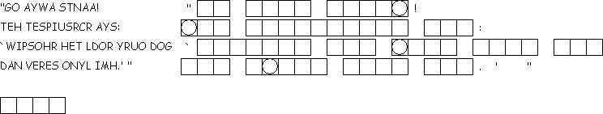

This Week: Genesis 2:15-17; 3:1-7 , Psalm 32 , Romans 5:12-19 , Matthew 4:1-11
Elementary School Pew-work
Unscramble the bolded words:
The asken __________ came to the woman and asked, "Did God tell you not to eat fruit from any tree in the garden?" The amwon __________ answered, "God said we could eat fruit from any tree in the denrga __________, except the one in the middle. He told us not to eat ifutr __________ from that tree or even to touch it. If we do, we will die." "No, you won't!" the snake replied. "God understands what will happen on the day you eat fruit from that tree. You will see what you have done, and you will know the difference between ghirt __________ and owngr __________, just as God does." The woman stared at the fruit. It looked beautiful and tasty. She wanted the imwsdo __________ that it would give her, and she ate some of the fruit. Her sbdhanu __________ was there with her, so she gave some to him, and he ate it too. Right away they saw what they had done, and they realized they were keadn __________. Then they sewed fig avlese __________ together to make something to cover themselves.
What did God
tell the woman and her
husband?
__________________________________________________________________________
What did the
snake tell the
woman?
__________________________________________________________________________
Which one did
the woman choose to
believe?
__________________________________________________________________________
What
happened when the man and woman ate the
fruit?
__________________________________________________________________________

Next
Week:
Genesis
12:1-4a,
Psalm
121 ,
Romans
4:1-5, 13-17,
John
3:1-17 or
Matthew
17:
This Week: Genesis 2:15-17; 3:1-7 , Psalm 32 , Romans 5:12-19 , Matthew 4:1-11
Middle-School Pew-work
Speculate:
what disciplines might someone choose to make part of their daily
life, that could help them withstand temptation?
________________________________________________________________________
________________________________________________________________________
________________________________________________________________________
________________________________________________________________________
________________________________________________________________________
________________________________________________________________________
________________________________________________________________________
________________________________________________________________________
________________________________________________________________________
Next week: Genesis 12:1-4a, Psalm 121 , Romans 4:1-5, 13-17, John 3:1-17 or Matthew 17:1